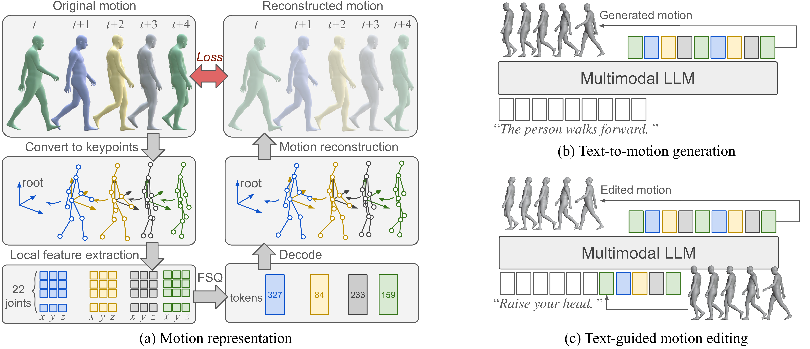

Synthesizing realistic human motion from natural language holds transformative potential for animation, robotics, and virtual reality. Recent methods handle single-action sequences and simple textual instructions, yet multi-action compositions and precise editing remain elusive due to limited data diversity, inadequate representations, and fragmented pipelines. Critically, most existing methods train motion generation models from scratch, failing to exploit the rich action semantics and long-horizon reasoning already encoded in pretrained MLLMs. Here we show that finetuning a pretrained MLLM with large-scale motion data yields strong zero-shot generalization across diverse text-guided motion generation and editing tasks. We present MotionMaster, a unified framework built on three components: MotionGB, a 10,000-hour dataset expanded from 400 hours of verified motion capture via spatial-temporal augmentation; an FSQ-based tokenizer that preserves both local joint accuracy and global trajectory coherence; and a finetuned MLLM with motion and language tokens in a shared embedding space. MotionMaster outperforms prior methods by 41.6% in multi-action semantic consistency and 20.8% in body-part composition. These results demonstrate that pretraining knowledge from MLLMs transfers effectively to motion understanding, opening a viable path toward general-purpose motion intelligence.

Overview of MotionMaster. (a) The FSQ-based motion tokenizer encodes joint positions into localized features, quantizes them into discrete tokens, and supervises reconstruction via a loss computed in global coordinates. (b) For text-to-motion generation, the finetuned MLLM autoregressively decodes motion tokens conditioned on a text prompt. (c) For text-guided editing, the original motion is provided as additional context, and the MLLM selectively modifies the relevant tokens while preserving the remainder of the sequence.
@inproceedings{jiang2026motionmaster,
title={MotionMaster: Generalizable Text-Driven Motion Generation and Editing},
author={Jiang, Nan and Li, Yunhao and Pang, Lexi and He, Zimo and Huang, Siyuan and Zhu, Yixin},
booktitle={Proceedings of the IEEE/CVF Conference on Computer Vision and Pattern Recognition},
year={2026}
}